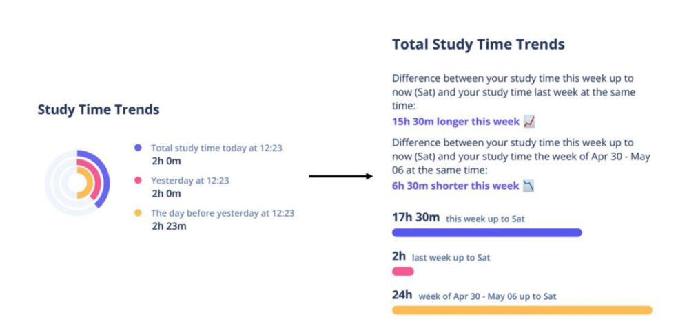
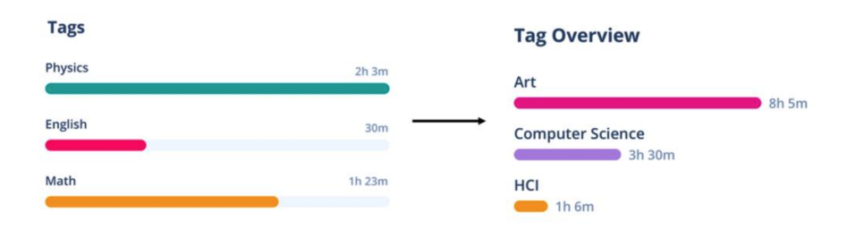
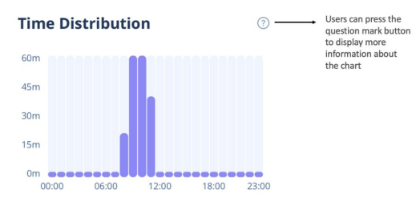

Back to top
Academic procrastination and personal informatics
Project Type
Master's Thesis (Carleton University)
Master's Thesis (Carleton University)
Duration
May 2022 — Aug 2023,
16 Months
May 2022 — Aug 2023,
16 Months
Methods
Literature Review,
Usability Study,
Semi-Structured Interviews,
Surveys
Literature Review,
Usability Study,
Semi-Structured Interviews,
Surveys
Key Skills
Prototyping,
User Research,
Qual + Quant Analysis
Prototyping,
User Research,
Qual + Quant Analysis
Overview
Introduction and Problem Statement
Procrastination remains a pervasive challenge among university students, significantly impacting academic success. Recognizing the downfalls of existing interventions due to their cost and time-consuming nature, our study aimed to investigate the effectiveness of a technology-driven solution. Specifically, we explored whether the simple act of tracking study time, coupled with data visualizations, could serve as a practical and accessible strategy to improve study behaviour and reduce procrastination.My Role
Primary Researcher - independent thesis projectResearch Process

Prototype
Design Process
The design process unfolded systematically, beginning with rough hand sketches that evolved into wireframes and resulted in a high-fidelity prototype, created on Figma. Informed by current market trends and established design principles, the prototype drew inspiration from popular productivity tracking apps. Notably, we deliberately refrained from integrating gamified or social features to isolate the impact of tracking and visualizations on procrastination.
Usability Study
To assess usability, I conducted usability studies with eight participants, who engaged with the high-fidelity Figma prototype. They provided feedback through think-aloud tasks and System Usability Scale (SUS) scores (average SUS score: 83.75). Insights found from analyzing the data prompted adjustments to certain graphs on the Charts page for improved clarity and user understanding. Particularly, I addressed participant confusion regarding progress representation by altering the design of the graphs.  The StudyTracker App
Implementation
I implemented the StudyTracker app using SwiftUI, which was compatible with iOS 15.0+. Core features included a study timer, a history section for session management, and tags for categorizing study sessions. User feedback was provided through text and charts.


Pilot Study
Procedure and Results
I aimed to explore several research questions:
01
What are students' thoughts on the developed application?
02
How does the app impact students' study behaviour?
03
How can the app be improved?
I conducted a 10-day pilot study with seven participants, aged 18 to 51, to receive initial feedback on the app. Thematic analysis of semi-structured interview transcripts revealed four key themes: improvement in study behaviour, invoked positive feelings, overall satisfaction with the app, and design suggestions. Insights from this study informed subsequent design decisions.

App Iterations
Adjustments were made based on pilot study feedback. Changes included the addition of a notification feature that reminds users of the running timer, the removal of mandatory tag colours, and the incorporation of customization features suggested by users. A button for additional chart information was added to address user confusion.
Main Study
Procedure
I conducted a 6-week randomized controlled trial, where each group comprised of 9 participants. The experimental group used the app and the control group did not use the app. Each group responded to an initial and final procrastination questionnaire, along with weekly procrastination questionnaires to assess any subtle changes.
H1
The participants in the experimental group will experience a significantly greater decrease in procrastination scores than the participants in the control group.
RQ1
How does the app impact students' study behaviours?
RQ2
How do students interact with and interpret their study data?
Qualitative Results
Thematic analysis of interviews identified four main themes: improved time perception, sustained focus on studies, enhanced time management, and the recognition that data alone is insufficient. Participants also expressed concerns about the application's engagement and design.
Conclusions
Reflection
Reflecting on the outcomes, the study's limitations, including a restricted participant pool, resulted in challenges in drawing definitive conclusions regarding the app's impact on procrastination. Intriguingly, statistical analysis revealed a greater decrease in procrastination scores among the control group, prompting reflections on the app's engagement and the potential burden of consistent tracking on students.Design Implications
01
Reminding Users to Track: While recognizing the importance of notifications, users should have the option to tailor their notification settings.
These customizations halt the user from becoming annoyed by notifications.
02
Ensuring That Data is Accurate: Users should be able to edit, manually add, and remove data entries, especially when tracking is semi-automated,
in order to maintain data accuracy.
03
Optimizing Data Visualizations: The recommendation is to provide a variety of customizable charts and a flexible dashboard
to adhere to the diversity in user preferences.
04
Gamification and Social Features: Recognizing the user need for varying persuasive features, future iterations could explore gamified and social elements.